| LOGO | NOM | DESCRIPTION | TYPE | LIBRE | GRATUIT | OS |
|---|---|---|---|---|---|---|
| 7zip | 7-Zip is a file archiver with a high compression ratio | log_local | oui | oui | Win ; Mac ; Linux | |
| VLC | VLC est un lecteur multimédia gratuit et libre et un système capable de lire la plupart des fichiers multimédias ainsi que des DVD, des CD Audio, des VCD, et divers protocoles de diffusion. | log_local | oui | oui | Win ; Mac ; Linux | |
| 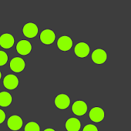 | Greenshot | Greenshot is a light-weight screenshot software tool for Windows with the following key features | log_local | oui | oui | Win |
| FileZilla | Welcome to the homepage of FileZilla, the free FTP solution. The FileZilla Client not only supports FTP, but also FTP over TLS (FTPS) and SFTP | log_local | oui | oui | Win ; Mac ; Linux | |
| Mozilla Firefox | Mozilla Firefox [mɒˈzɪlə ˈfaɪɚfɑks] est un navigateur web libre et gratuit disponible pour PC et mobile | log_local | oui | oui | Win ; Mac ; Linux | |
| Tor | Tor, short for The Onion Router, is free and open-source software for enabling anonymous communication. It directs Internet traffic via a free, worldwide volunteer overlay network that consists of more than seven thousand relays | log_local | oui | oui | Win ; Mac ; Linux |
En vrac : quelques outils numériques pour les SHS
Séance TRUC (Travaux de Recherche d’Utilité Collective) ‘Geek’, le 20 mars 2024
Noter, brouillonner, organiser
| LOGO | NOM | DESCRIPTION | TYPE | LIBRE | GRATUIT | OS |
|---|---|---|---|---|---|---|
| Sublim Text | Sublime Text is a shareware text and source code editor available for Windows, macOS, and Linux. It natively supports many programming languages and markup languages. | log_local | oui | oui | Win ; Mac ; Linux | |
| 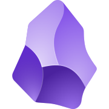 | Obsidian | Obsidian est une application de gestion des connaissances personnelles et une application logicielle de prise de notes qui fonctionne sur les fichiers Markdown. Il permet aux utilisateurs de créer des liens internes pour leurs notes, puis de visualiser les connexions sous forme de graphique. | log_local | non | oui | Win ; Mac ; Linux |
| 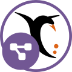 | Framindmap | Framindmap permet de créer et partager des cartes mentales (aussi appelées « cartes heuristiques »). Vous pouvez organiser un brainstorming, ordonner vos idées à plusieurs, apprendre et faire apprendre une leçon, réaliser des classifications, identifier les éléments importants… | online | oui | oui | NA |
Lire et citer
| LOGO | NOM | DESCRIPTION | TYPE | LIBRE | GRATUIT | OS |
|---|---|---|---|---|---|---|
| Zotero | Zotero is a free, easy-to-use tool to help you collect, organize, annotate, cite, and share research | log_local | oui | oui | Win ; Mac ; Linux | |
| Zotero connector | Zotero Connectors allow you to save to Zotero directly from your web browser. | plugin | oui | oui | NA | |
| unpaywall | An open database of 49 647 511 free scholarly articles. Read research papers for free. Click the green tab and skip the paywall on millions of peer-reviewed journal articles. It's fast, free, and legal | plugin | oui | oui | NA | |
| 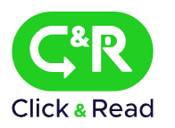 | click and read | Click & Read est un mode d’accès complémentaire au portail BibCnrs. | plugin | NA | oui | NA |
| 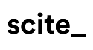 | scite | The scite browser extension is a free extension that gives you the power of scite on the go so that you can see how any research article has been cited. | plugin | NA | oui | NA |
| extranet enpc | Signet d’accès distance à mettre dans ces favoris, permettant l’authentification automatique à votre compte ENPC (pour avoir accès à l’article, si disponible | plugin | NA | oui | NA | |
| Tropy | Tropy is a free and open-source desktop knowledge organization application that helps users manage and describe photographs of research materials. Photos imported into Tropy can be combined into single items, described with metadata that is applied in bulk or created with custom metadata templates, annotated with research notes, and tagged in accordance with a researcher's preferred mode of organization. | log_local | oui | oui | oui | |
| Sci-Hub | Sci-Hub (ou Scihub) est un site web fournissant un accès libre à des articles scientifiques obtenus par web scraping en contournant les paywalls (« péages ») classiques des éditeurs académiques. Des publications sont ajoutées quotidiennement après avoir été téléchargées via des proxys d'établissements universitaires | online | NA | NA | NA | |
| LibGen | Library Genesis ou LibGen est un moteur de recherche d'articles et de livres scientifiques qui facilite l'accès aux contenus soumis à un péage. Il diffuse notamment les fichiers PDF du portail Web ScienceDirect d'Elsevier | online | NA | NA | NA |
Ecrire
| LOGO | NOM | DESCRIPTION | TYPE | LIBRE | GRATUIT | OS |
|---|---|---|---|---|---|---|
| Libre Office Writer | LibreOffice Writer is the free and open-source word processor and desktop publishing component of the LibreOffice software package and is a fork of OpenOffice.org Writer. Writer is a word processor similar to Microsoft Word and Corel's WordPerfect with many similar features, and file format compatibility | log_local | oui | oui | Win ; Mac ; Linux | |
| Microsoft Word | Microsoft Word est un logiciel de traitement de texte publié par Microsoft | log_local | non | non | Win ; Mac ; Linux | |
| Overleaf (LaTeX) | Overleaf est un éditeur LaTeX en ligne, collaboratif en temps réel | online | oui | oui | NA |
Travailler en groupe
| LOGO | NOM | DESCRIPTION | TYPE | LIBRE | GRATUIT | OS |
|---|---|---|---|---|---|---|
| 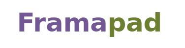 | Framapad | Framapad est un service en ligne de traitement de texte (une sorte de Word ou Writer très simplifié), et de travail collaboratif (proche de Google Drive), reposant sur l'application libre EtherPad, | online | oui | oui | NA |
| 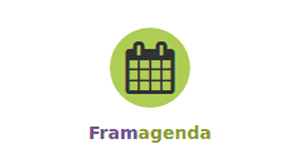 | Framagenda | Framagenda est un service en ligne de gestion et de partage de calendriers. | online | oui | oui | NA |
| 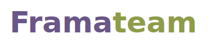 | Framateam / Mattermost | Framateam est un service de tchat libre qui permet de communiquer avec son équipe en notifiant ses collègues, de conserver ses conversations et d'y faire des recherches. | online ; log_local | oui | oui | Win ; Mac ; Linux |
| Framadate | Framadate est un service en ligne permettant de planifier un rendez-vous ou prendre des décisions rapidement et simplement. Aucune inscription préalable n’est nécessaire. | online | oui | oui | NA | |
| ent uge/enpc | NA | online | NA | NA | NA | |
| 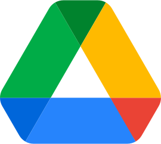 | Google Drive | Google Drive est un service de stockage et de partage de fichiers dans le cloud lancé par la société Google | online | non | oui | NA |
| GitLab | GitLab est un logiciel libre de forge basé sur git proposant les fonctionnalités de wiki, un système de suivi des bugs, l’intégration continue et la livraison continue. | online | oui | non | NA | |
| GitHub | GitHub est un service web d'hébergement et de gestion de développement de logiciels, utilisant le logiciel de gestion de versions Git | online | NA | oui | NA | |
| Trello | Trello est un outil de gestion de projet en ligne. Il repose sur une organisation des projets en planches listant des cartes, chacune représentant des tâches. Les cartes sont assignables à des utilisateurs et sont mobiles d'une planche à l'autre, traduisant leur avancement. | online | NA | oui | NA |
Saisir et compter
| LOGO | NOM | DESCRIPTION | TYPE | LIBRE | GRATUIT | OS |
|---|---|---|---|---|---|---|
| 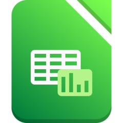 | Libre Office Calc | LibreOffice Calc is the spreadsheet component of the LibreOffice software package | log_local | oui | oui | Win ; Mac ; Linux |
| Microsoft Excel | NA | log_local | non | non | Win ; Mac ; Linux | |
| Framaforms | Framaforms est un service en ligne libre qui permet de créer, éditer et publier ses formulaires en ligne, puis d’en récolter, analyser et exporter les réponses. | online | oui | oui | NA | |
| OpenRefine | OpenRefine est un logiciel libre de nettoyage et de mise en forme de données. Il est similaire dans son apparence à un tableur mais fonctionne en fait comme une base de données. | log_local | oui | oui | Win ; Mac ; Linux | |
| exploratR | Outil interactif d’exploration statistique uni- bi- tri- et multi-variée avec R. | online | oui | oui | NA | |
| analyseSHS | Le projet Analyse SHS est une interface web de traitements de tableau de données pour les étudiants et les chercheurs en sciences humaines et sociales. Elle permet de mettre en œuvre des statistiques descriptives et multidimensionnelles à partir de tableaux envoyés par l'utilisateur depuis un navigateur web | online | oui | oui | NA |
Géographier et cartographier
| LOGO | NOM | DESCRIPTION | TYPE | LIBRE | GRATUIT | OS |
|---|---|---|---|---|---|---|
| Base Adresse Nationale (BAN) | La Base Adresse Nationale est l’une des neuf bases de données du service public des données de référence. Elle est la seule base de données d’adresses officiellement reconnue par l’administration. | online | oui | oui | NA | |
| geocode.xyz | Appli et API de géocodage | online | non | oui | NA | |
| 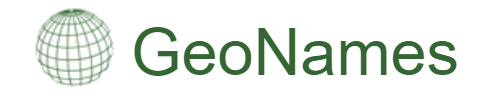 | GeoNames | GeoNames est une base de données géographiques gratuite et accessible par Internet sous une licence Creative Commons. L'interface est de type wiki et les utilisateurs peuvent ajouter des données, les améliorer ou corriger les données présentes | online | oui | oui | NA |
| Magrit | Cartographie thématique en ligne | online | oui | oui | NA | |
| 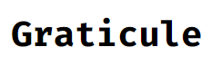 | Graticule | Cartographie thématique en ligne | online | oui | oui | NA |
| ColorBrewer | Interface interactive pour l’aide au choix de palettes de couleurs pour la cartographie | online | NA | oui | NA | |
| 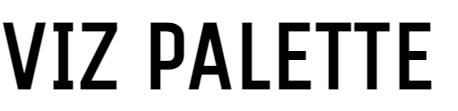 | Viz Palette | Interface interactive pour l’aide au choix de palettes de couleurs pour la visualisation de données | online | NA | oui | NA |
| Qgis | QGIS est un logiciel SIG (système d'information géographique) libre multiplate-forme publié sous licence GPL. | log_local | oui | oui | Win ; Mac ; Linux | |
| Qfield | L'application SIG mobile a pour but de collecter les données du terrain et de les intégrer facilement à un projet QGIS. | phoneapp | oui | oui | NA |